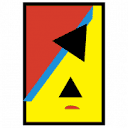

ALTEN — Prácticas de empresa (FCT)
Actualmente · Soporte TécnicoPrácticas de Formación en Centros de Trabajo en el puesto de Soporte Técnico, desde septiembre de 2026 hasta la actualidad.
Ver empresa ↗> whoami
Analista de Ciberseguridad · Red Team & Blue Team
Soporte Técnico
Del desarrollo web a la ciberseguridad. Me dedico a encontrar, entender y mitigar amenazas — desde el pentesting ofensivo hasta la defensa, detección y respuesta.
// sobre mí
Me considero una persona tenaz, proactiva y con una fuerte orientación al trabajo en equipo. Me apasiona colaborar en entornos donde todos trabajamos hacia un objetivo común. Mi autoexigencia y compromiso, tanto personal como profesional, me han permitido destacar en diversos entornos laborales.
Desde siempre me ha fascinado el mundo de la TI: empecé con desarrollo web y me he enfocado en la ciberseguridad, un campo que más me apasiona cuanto más me adentro en él. He completado las skills de Cisco para Analista Junior en Ciberseguridad y he finalizado un Bootcamp de Ciberseguridad con The Bridge | Digital Talent Accelerator, donde adquirí sólidos conocimientos teóricos y prácticos en Red Team y Blue Team.
He aprobado las certificaciones de Red Team eJPTv2 de INE Security, CCST Cybersecurity de Cisco, Microsoft SC-900 (Security, Compliance and Identity Fundamentals) y Microsoft AZ-900 (Azure Fundamentals). Sigo comprometido con mi formación continua para llegar a ser un gran profesional del sector. Actualmente estoy terminando mi FP de Técnico Superior en Administración de Sistemas Informáticos en Red (ASIR) y realizando las prácticas de empresa (FCT) en un puesto de Soporte Técnico.
// trayectoria
Cada credencial enlaza a su verificación oficial (Credly, INE, Cisco NetAcad, The Bridge).

Prácticas de Formación en Centros de Trabajo en el puesto de Soporte Técnico, desde septiembre de 2026 hasta la actualidad.
Ver empresa ↗Ciclo formativo de Grado Superior de Formación Profesional, actualmente en su fase final.
Ver centro ↗Enumeración y reconocimiento de redes, recopilación de información, evaluación y explotación de vulnerabilidades, explotación web, escalada de privilegios, pivoting y explotación de entornos Windows y Linux.
Ver credencial ↗
Amenazas, vulnerabilidades y ataques; seguridad de redes e inalámbricas; protección de sistemas y endpoints; control de accesos, firewalls y criptografía; inteligencia de amenazas, gobernanza, cumplimiento y gestión de riesgos.
Ver credencial ↗Conceptos de seguridad, cumplimiento e identidad en Microsoft: Entra ID, Microsoft Defender, gestión de identidad y acceso, y capacidades de gobernanza, riesgo y cumplimiento.
Ver credencial ↗Fundamentos de la computación en la nube y servicios de Azure: modelos de servicio (IaaS, PaaS, SaaS), cómputo, redes, almacenamiento, bases de datos, administración, gobernanza y seguridad.
Ver credencial ↗Bootcamp de 500 horas (más del 70 % prácticas), dividido en Ramp-Up, Red Team y Blue Team.
Itinerario oficial de Cisco (preparación CCST): Introducción a la Ciberseguridad, redes, dispositivos de red y configuración inicial, seguridad de endpoints, defensa de la red y gestión de amenazas cibernéticas.
Ver itinerario ↗Fundamentos de la programación informática: Java y Python.
Ver academia ↗Diseño gráfico y web con CMS.
FP — Técnico en Preimpresión en Artes Gráficas.
// skills
Herramientas y áreas con las que trabajo, organizadas por equipo.
// certificaciones
Filtra por emisor. Haz clic en cualquier certificado para ampliarlo.
// contacto
¿Tienes una oportunidad, proyecto o simplemente quieres saludar? Escríbeme y te responderé lo antes posible.